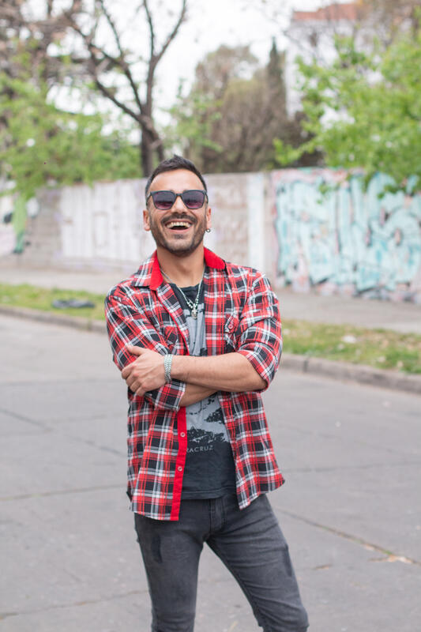
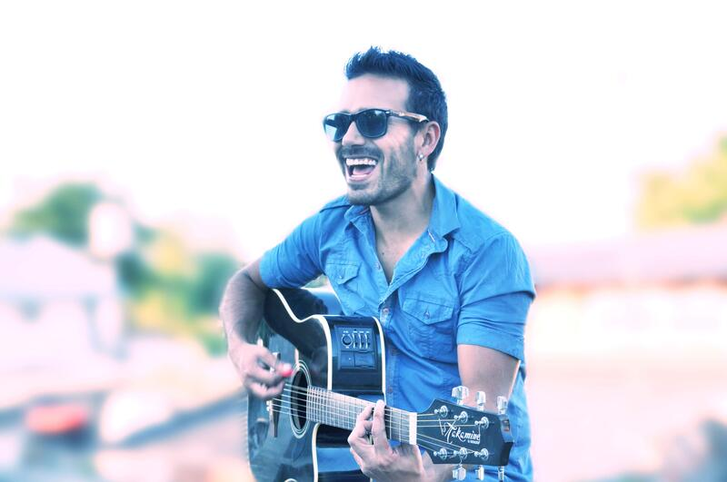

Cantautor · Poeta
Fusiona pop-rock acústico, balada latina y poesía romántica en una propuesta íntima y emocional. Música y textos que conectan con quienes buscan en el arte un refugio de autenticidad.
Exe Fidalgo es un cantautor, compositor, letrista, autor y poeta argentino nacido en 1985 en San Antonio de Padua y criado en Libertad, partido de Merlo. Su obra nace de una raíz profundamente musical y literaria: una infancia atravesada por guitarras, acordeones, peñas familiares, cuentos, poesía y una sensibilidad que comenzó a expresarse desde muy temprano.
Hijo de Raúl Fidalgo y Marta Barbosa, creció en un hogar donde la música formaba parte de la vida cotidiana. A los 8 años ya escribía sus primeros poemas, y desde niño comenzó a explorar de manera autodidacta la guitarra, el piano y la composición. Esa relación temprana con la música y la palabra fue dando forma a una identidad artística propia, honesta y emocional.
En su adolescencia dio sus primeros pasos en bandas de punk, metal y rock, y más tarde consolidó una etapa importante con el proyecto Cover, presentándose en escenarios de Buenos Aires y el conurbano. En 2014 inició oficialmente su camino solista bajo el nombre Exe Fidalgo, dando forma a una propuesta más íntima y poética.
Su universo artístico se define como una fusión de pop-rock acústico, balada latina y poesía romántica, erótica e introspectiva. En sus canciones y poemas dialogan influencias como Cerati, Bon Jovi, Radiohead, Arjona, Beatles, Nirvana, Bob Dylan y Eddie Vedder, junto a voces literarias como Neruda, Benedetti, Bukowski, Bécquer y Whitman.
En 2015 presentó Sesiones Vivas, reuniendo canciones como «Dejar de pensar», «Si te vas», «Canción» y «Todavía». Desde entonces, su proyecto creció junto a una comunidad fiel y cercana —las Fidalguitas— que acompañan su música y su poesía desde distintos países.
Hoy, Exe Fidalgo continúa expandiendo su obra con nuevas canciones, presentaciones en vivo y la preparación de su primer libro de poemas. Su recorrido artístico confirma una búsqueda constante: convertir la experiencia en arte, y el arte en una forma de encuentro real con quienes lo escuchan.

Exe Fidalgo · Buenos Aires, Argentina
«Todavía te amo a pesar de todo. Y todavía dueles un montón.»
Ver discografía completa en Spotify
«Escribo lo que no te animás a decir.»
Buenos Aires · 2014 – Presente
Formate parte de las Fidalguitas. Seguí a Exe en todas las plataformas.
Para shows, prensa, colaboraciones o simplemente para decir hola.
exefidalgomusic@gmail.com«Los momentos
sólo pasan una vez.»
— Exe Fidalgo